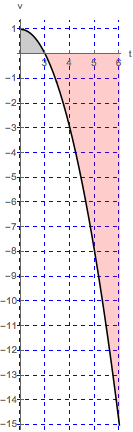

- (a)
- Set up a definite integral for the man’s displacement during the time interval from \(2\) minutes to \(6\) minutes after he began running.
- (b)
- At home: Evaluate the definite integral using the limit of a right Riemann
sum. \begin{align*} v(t_k) &= -\left (2 + \frac {4k}{n} \right )^2 + 4 \left ( 2 + \frac {4k}{n} \right ) - 3 \\ &= - \left ( 4 + \frac {16k}{n} + \frac {16k^2}{n^2} \right ) + 8 + \frac {16k}{n} - 3 \\ &= 1 - \frac {16k^2}{n^2} \end{align*}
So we compute:
\begin{align*} \int _2^6 v(t) \d t &= \lim _{n \to \infty } \sum _{k=1}^n \left [ \left ( 1 - \frac {16k^2}{n^2} \right ) \left ( \frac {4}{n} \right ) \right ] \\ &= \lim _{n \to \infty } \sum _{k=1}^n \left ( \frac {4}{n} - \frac {64 k^2}{n^3} \right ) \\ &= \lim _{n \to \infty } \left [ \frac {4}{n} \sum _{k=1}^n 1 - \frac {64}{n^3} \sum _{k=1}^n k^2 \right ] \\ &= \lim _{n \to \infty } \left [ \frac {4}{n} (n) - \frac {64}{n^3} \left ( \frac {n(n+1)(2n+1)}{6} \right ) \right ] \\ &= 4 - \frac {64}{3} = \frac {12-64}{3} = - \frac {52}{3}. \end{align*} - (c)
- Is this the same as the total distance the man walked from \(2\) minutes to \(6\)
minutes? Why or why not? This number is not the same as the total distance. The man starts his walk by going east (the positive direction) but eventually ends his walk west of where he started.
The total distance that the man walks would be measured by computing
\[\int _2^6 \left | v(t) \right | \d t\]\(\int _2^6 \left | v(t) \right | \d t=\int _2^3 \left | v(t) \right | \d t+\int _3^6 \left | v(t) \right | \d t=\int _2^3 v(t) \d t+\int _3^6(- v(t)) \d t=\int _2^3 v(t) \d t-\int _3^6v(t) \d t\)